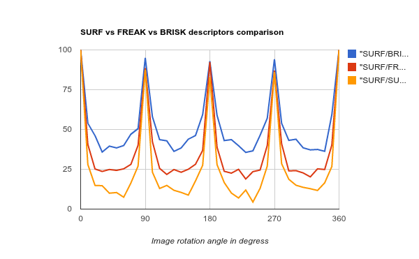

I think developers and research guys who works with object recognition, image registration and other areas that uses keypoint extraction can find this post useful. Recently (from 2.4.2) a new feature descriptor algorithm was added to OpenCV library. FREAK descriptor is claimed to be superior to ORB and SURF descriptors, yet it’s very fast (comparable to ORB). Also people in comments on my blog mentioned BRISK descriptor which is also new and more efficient than SURF. Well, finally i find a time to compare them and publish my research results.
Introduction
This post will be very similar to OpenCV comparison reports i made in past. Although those reports were published years ago, they are still somewhat actual. For this test i decided to rewrite the whole testing framework from scratch. The source code will be available soon. But for now, let me explain what i did to find a best of three algorithms. What is main goal of converting image to descriptors? Move from pixel domain to more compact form of representation the same data. In addition we would like our representation be rotation and scale invariant (e.g representation remains the same or changes slightly when source image rotated or scaled). SURF, FREAK and BRISK descriptors claims they are rotation and scale invariant.
Transformations
Like in the OpenCV comparison report, test application works with test pattern image. And we have four basic transformations: rotation, scale, blur and brightness adjustment. Here how the rotation transformation class looks like:
class ImageRotationTransformation : public ImageTransformation
{
public:
ImageRotationTransformation(float startAngleInDeg, float endAngleInDeg, float step, cv::Point2f rotationCenterInUnitSpace)
: ImageTransformation("Rotation")
, m_startAngleInDeg(startAngleInDeg)
, m_endAngleInDeg(endAngleInDeg)
, m_step(step)
, m_rotationCenterInUnitSpace(rotationCenterInUnitSpace)
{
// Fill the arguments
for (float arg = startAngleInDeg; arg < = endAngleInDeg; arg += step)
m_args.push_back(arg);
}
virtual std::vector getX() const
{
return m_args;
}
virtual void transform(float t, const cv::Mat& source, cv::Mat& result) const
{
cv::Point2f center(source.cols * m_rotationCenterInUnitSpace.x, source.cols * m_rotationCenterInUnitSpace.y);
cv::Mat rotationMat = cv::getRotationMatrix2D(center, t, 1);
cv::warpAffine(source, result, rotationMat, source.size());
}
private:
float m_startAngleInDeg;
float m_endAngleInDeg;
float m_step;
cv::Point2f m_rotationCenterInUnitSpace;
std::vector m_args;
};
Other types of transformations looks similar. But it shows the idea.
FeatureAlgorithm
As you may know we need three components when dealing with descriptors:
- Feature detector - class derived from cv::FeatureDetector class that implements particular detection algorithm. For example, cv::SurfFeatureDetector implements detection algorithm described in SURF paper.
- Descriptor extractor - class derived from cv::DescriptorExtractor. It computes descriptors from passed keypoints. cv::SurfDescriptorExtractor will computer SURF descriptors.
- Descriptor matcher - An instance of cv::BFMatcher of cv::FlannBasedMatcher classes is used to match two sets of descriptors.
We store these three objects in FeatureAlgorithm class:
class FeatureAlgorithm
{
public:
FeatureAlgorithm(std::string name, cv::FeatureDetector* d, cv::DescriptorExtractor* e, cv::DescriptorMatcher* m);
std::string name;
bool knMatchSupported;
bool extractFeatures(const cv::Mat& image, Keypoints& kp, Descriptors& desc) const;
void matchFeatures(const Descriptors& train, const Descriptors& query, Matches& matches) const;
void matchFeatures(const Descriptors& train, const Descriptors& query, int k, std::vector& matches) const;
private:
cv::FeatureDetector* detector;
cv::DescriptorExtractor* extractor;
cv::DescriptorMatcher* matcher;
};
Test routine
The main test function takes FeatureAlgorithm, Transformation and test image. As output we return list of matching statistics for each run. Here is a brief sequence:
- Convert input image to grayscale
- Detect keypoints and extract descriptors from input grayscale image
- Generate all transformed images using passed transformation algorithm
- For each of the transformed image:
- Detect keypoints and extract descriptors
- Match train descriptors and query
- Split matches to inliers and outliers using homography estimation
- Compute statistics (consumed time, total percent of matches, percent of correct matches, etc)
The main cycle is paralleled using OpenMP, on my Quad Core i5 it loads all cores for 100% while doing test. Feature Algoritms:
algorithms.push_back(FeatureAlgorithm("SURF/BRISK/BF",
new cv::SurfFeatureDetector(),
new cv::BriskDescriptorExtractor(),
new cv::BFMatcher(cv::NORM_HAMMING, true)));
algorithms.push_back(FeatureAlgorithm("SURF/FREAK/BF",
new cv::SurfFeatureDetector(),
new cv::FREAK(),
new cv::BFMatcher(cv::NORM_HAMMING, true)));
algorithms.push_back(FeatureAlgorithm("SURF/SURF/BF",
new cv::SurfFeatureDetector(),
new cv::SurfDescriptorExtractor(),
new cv::BFMatcher(cv::NORM_L2, true)));
Image transformations:
transformations.push_back(new GaussianBlurTransform(9));
transformations.push_back(new BrightnessImageTransform(-127, +127, 10));
transformations.push_back(new ImageRotationTransformation(0, 360, 10, cv::Point2f(0.5f,0.5f)));
transformations.push_back(new ImageScalingTransformation(0.25f, 2.0f, 0.1f));
Metrics
The following metrics are calculated:
- Percent of matches - quotient of dividing matches count on the minimum of keypoints count on two frames in percents.
- Percent of correct matches - quotient of dividing correct matches count on total matches count in percents.
- Matching ratio - percent of matches * percent of correct matches. In all charts i will use “Matching ratio” ( in percents) value for Y-axis.
Statistics
After running all tests we collect statistics for each transformation and algorithm. The report table for particular transformation algorithm looks like this:
Argument SURF/BRISK/BF SURF/FREAK/BF SURF/SURF/BF
1 100 88.5965 82.6752
2 100 86.9608 79.1689
3 100 85.6069 70.6731
4 100 85.0897 64.9057
5 100 83.1528 59.4776
6 100 85.1648 58.9763
7 100 88.6447 59.3066
8 100 94.9109 64.8019
9 100 95.9707 69.1154
To make a graphic representation i used Google Spreadsheets to import CSV tables and generate charts. You can find this spreadsheet here: OpenCV 2.4.9 Features Comparison Report.
Results
 ")